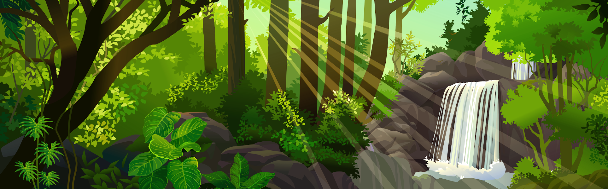

Um dia desses,dentro de um livro da biblioteca da escola, eu descobri uma carta antiga sobre uma cidade perdida, escondida por riquezas e belezas naturais. Nessa carta, a autora deixa algumas pistas para encontrar essa cidade e eu decidi segui-las!
voce começa sua jornada no Rio de janeiro, subindo o Pico da Tijuca ao amanhecer para encontrar a primeira pista.
Em Pernambuco,voce visita a historica cidade de olinda. Na carta,uma das pistas indica que para localizar a entrada para a cidade perdida voce deve procurar a proxima pista em um dos pontos turisticos da cidade. Por qual voce começa?

voce decide quw a aventura e grande demais e volta para casa, mas sempre se pergunta o que teria encontrado
nas igrejas de olinda, voce descobre um mapa antigo escondido atras de um altar, apontando q a proxima pista esta no amazonas
explorando as praias, voce encontra uma caverna escondida, mas ela leva a um beco sem saida
no amazonas, a busca pela cidade perdida se intencifica. voce se depara com um rio bifurcado